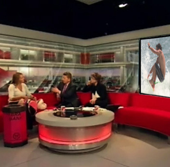
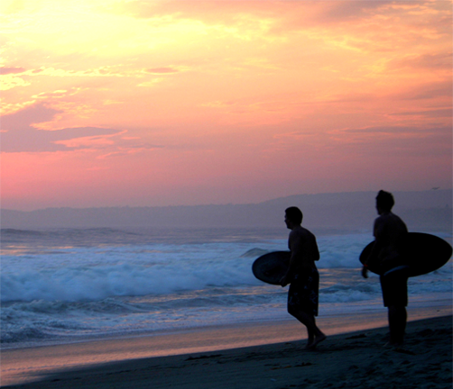
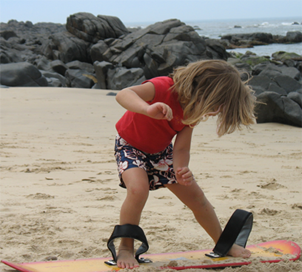

Appearing on the BBC
The BBC coverage of the annual world Bellyboarding Championships in Cornwall, 8th July 2012, featuring Sam Boyd!
"...The event on Sunday at Chapel Porth beach at St Agnes saw a
record 350 people take to the sea. "These boards were a bit of a
joke five or 10 years ago," says boardmaker Sam Boyd, pointing to
some plyboard wood, "serious surfers would never have dreamed of
going on them." And you can see his point. Yet the skinny boards
that many learned to surf on as children are now being taken more
seriously, and a new wave of retro surfers is lining up to have a
go at the sport of bellyboarding..."
View More Information »

Surfing in Homunga
A report by Sam Boyd and Tom Lee, 22 September 2012.
Conditions here are the best when the wind blows from the west and
the swell is coming from the north, north-west or north-east. The
waves start at about 1m high and will hold up to just over 3m,
performing best when the water is at low or mid tide position
and on a falling tide. It is a beach break, both right and left,
and the waves are hollow and also fairly fast and powerful. The
length is only short and won't often get beyond about 50m, but
still a great place to spend a day.
View More Information »

Planning Kids' Surf Parties
Hit the beach for the ultimate childrens's birthday party at Sam Boyd's
Surf Academy! Ideal for those kids who've got the beach right on their
doorstep. Our birthday parties are a fun and exciting experience,
garanteed to tire them out after all that cake!
Franklin Bay is a great family friendly beach with lots of facilites,
which makes it the ideal venue for an after surf beach BBQ or a bite to
eat in O'Leary's cafe. Give your child a Birthday to remember with out
exclusive Surfing Parties this summer!
View More Information »

{kind=link}
{kind=link}
{kind=link}
{kind=link}
{kind=link}